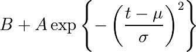
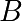
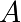
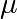
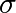

1.5.11.2. Non linear least squares curve fitting: application to point extraction in topographical lidar data¶
The goal of this exercise is to fit a model to some data. The data used in this tutorial are lidar data and are described in details in the following introductory paragraph. If you’re impatient and want to practice now, please skip it and go directly to Loading and visualization.
Introduction¶
Lidars systems are optical rangefinders that analyze property of scattered light to measure distances. Most of them emit a short light impulsion towards a target and record the reflected signal. This signal is then processed to extract the distance between the lidar system and the target.
Topographical lidar systems are such systems embedded in airborne platforms. They measure distances between the platform and the Earth, so as to deliver information on the Earth’s topography (see [1] for more details).
In this tutorial, the goal is to analyze the waveform recorded by the lidar system [2]. Such a signal contains peaks whose center and amplitude permit to compute the position and some characteristics of the hit target. When the footprint of the laser beam is around 1m on the Earth surface, the beam can hit multiple targets during the two-way propagation (for example the ground and the top of a tree or building). The sum of the contributions of each target hit by the laser beam then produces a complex signal with multiple peaks, each one containing information about one target.
One state of the art method to extract information from these data is to decompose them in a sum of Gaussian functions where each function represents the contribution of a target hit by the laser beam.
Therefore, we use the scipy.optimize module to fit a waveform to one
or a sum of Gaussian functions.
Loading and visualization¶
Load the first waveform using:
>>> import numpy as np
>>> waveform_1 = np.load('intro/scipy/summary-exercises/examples/waveform_1.npy')
and visualize it:
>>> import matplotlib.pyplot as plt
>>> t = np.arange(len(waveform_1))
>>> plt.plot(t, waveform_1)
[<matplotlib.lines.Line2D object at ...>]
>>> plt.show()
As shown below, this waveform is a 80-bin-length signal with a single peak with an amplitude of approximately 30 in the 15 nanosecond bin. Additionally, the base level of noise is approximately 3. These values can be used in the initial solution.
Fitting a waveform with a simple Gaussian model¶
The signal is very simple and can be modeled as a single Gaussian function and an offset corresponding to the background noise. To fit the signal with the function, we must:
define the model
propose an initial solution
call
scipy.optimize.leastsq
Model¶
A Gaussian function defined by

can be defined in python by:
>>> def model(t, coeffs):
... return coeffs[0] + coeffs[1] * np.exp( - ((t-coeffs[2])/coeffs[3])**2 )
where
coeffs[0]is  (noise)coeffs[1]is  (amplitude)coeffs[2]is  (center)coeffs[3]is  (width)
Initial solution¶
One possible initial solution that we determine by inspection is:
>>> x0 = np.array([3, 30, 15, 1], dtype=float)
Fit¶
scipy.optimize.leastsq minimizes the sum of squares of the function given as
an argument. Basically, the function to minimize is the residuals (the
difference between the data and the model):
>>> def residuals(coeffs, y, t):
... return y - model(t, coeffs)
So let’s get our solution by calling scipy.optimize.leastsq() with the
following arguments:
the function to minimize
an initial solution
the additional arguments to pass to the function
>>> import scipy as sp
>>> t = np.arange(len(waveform_1))
>>> x, flag = sp.optimize.leastsq(residuals, x0, args=(waveform_1, t))
>>> x
array([ 2.70363, 27.82020, 15.47924, 3.05636])
And visualize the solution:
fig, ax = plt.subplots(figsize=(8, 6))
plt.plot(t, waveform_1, t, model(t, x))
plt.xlabel("Time [ns]")
plt.ylabel("Amplitude [bins]")
plt.legend(["Waveform", "Model"])
plt.show()
Remark: from scipy v0.8 and above, you should rather use scipy.optimize.curve_fit() which takes the model and the data as arguments, so you don’t need to define the residuals any more.
Going further¶
Try with a more complex waveform (for instance
waveform_2.npy) that contains three significant peaks. You must adapt the model which is now a sum of Gaussian functions instead of only one Gaussian peak.
In some cases, writing an explicit function to compute the Jacobian is faster than letting
leastsqestimate it numerically. Create a function to compute the Jacobian of the residuals and use it as an input forleastsq.When we want to detect very small peaks in the signal, or when the initial guess is too far from a good solution, the result given by the algorithm is often not satisfying. Adding constraints to the parameters of the model enables to overcome such limitations. An example of a priori knowledge we can add is the sign of our variables (which are all positive).
See the solution.
Further exercise: compare the result of
scipy.optimize.leastsq()and what you can get withscipy.optimize.fmin_slsqp()when adding boundary constraints.